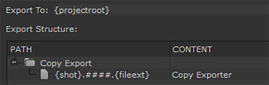

从不同位置复制介质非常耗时，可能会浪费磁盘空间。复制导出器允许您使用快照模板将仅包含项目媒体的序列合并到命名文件结构中。
要将媒体复制到命名位置:
| 1。 | 在 bin 视图中选择一个序列并导航到 文件 > 出口. |
的 出口 对话框显示。
| 2. | 选择 作为镜头处理 从 出口 下拉列表。 |
| 3. | 选择 转码镜头 DPX 预设，复制它，并给它一个名字。 |
| 4. | 输入 导出到 目录或单击 选择…… 并浏览到该位置。 |
的 导出到 目录是快照模板构建快照层次结构的起点。
| 5. | 使用构建自定义快照模板 路径 代币, 内容 字段，文件夹和 +/-按钮。 |
示例快照模板如下所示:

| 6. | 设置 版本 出口编号 (如果适用)。使用箭头增加版本号，使用 +/-按钮增加或减少填充。也可以直接在数字字段中键入。 |
注意: 请参阅 使用版本 有关版本控制如何在中工作的更多信息 核武器工作室 .
| 7. | 设置如何剪辑 开始帧 使用下拉菜单导出: |
• 源 -使用源开始帧。
• 自定义 -使用右侧的字段为所有剪辑指定开始帧。
| 8。 | 设置如何 核武器工作室 要使你的出口, 渲染与 下拉列表。 核武器工作室 提供以下选项: |
•
帧服务器
-使用多个核弹进程来加快渲染时间
请参阅 在外部机器上使用帧服务器 欲了解更多信息。
• 单一渲染过程 -使用一个单一的核弹过程来呈现你的出口。渲染 QuickTimes 回到此设置，但当帧服务器检测到问题时也会使用它。
•
自定义渲染过程
-使用自定义渲染过程。
核武器工作室
需要一个 Python 脚本将导出传递到您选择的渲染场。脚本必须位于特定目录中，取决于平台，如中所示
| 9. | 单击 出口 . |
的 导出队列 窗口显示每个导出组件预计需要多长时间的估计。
导出完成后，将创建快照模板中指定的文件结构。
提示: 单击放大镜图标在浏览器窗口中显示导出的文件。
|
|